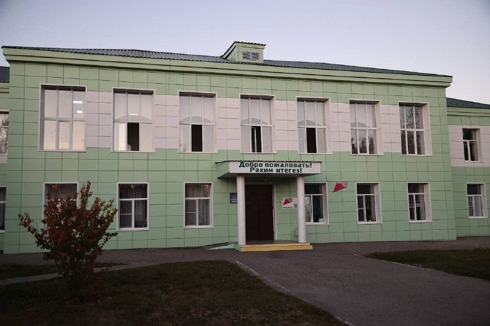

01
Общество и городская среда · событие дня
Коротко по итогам рабочей поездки
Здесь бережно хранят культуру и традиции. В школе крепкий педагогический коллектив и почти 300 учеников. Продолжим поддерживать школу. Обсудили дальнейший ремонт — поручил проработать варианты. ✅ Поставил задачу максимально ускорить завершение капремонта второго корпуса детского сада «Веселинка».…